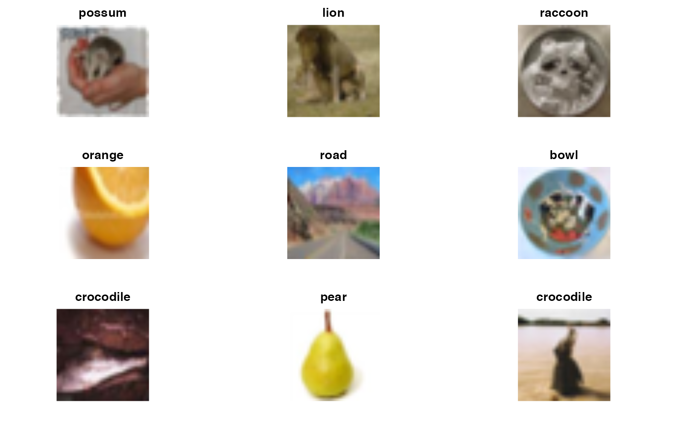
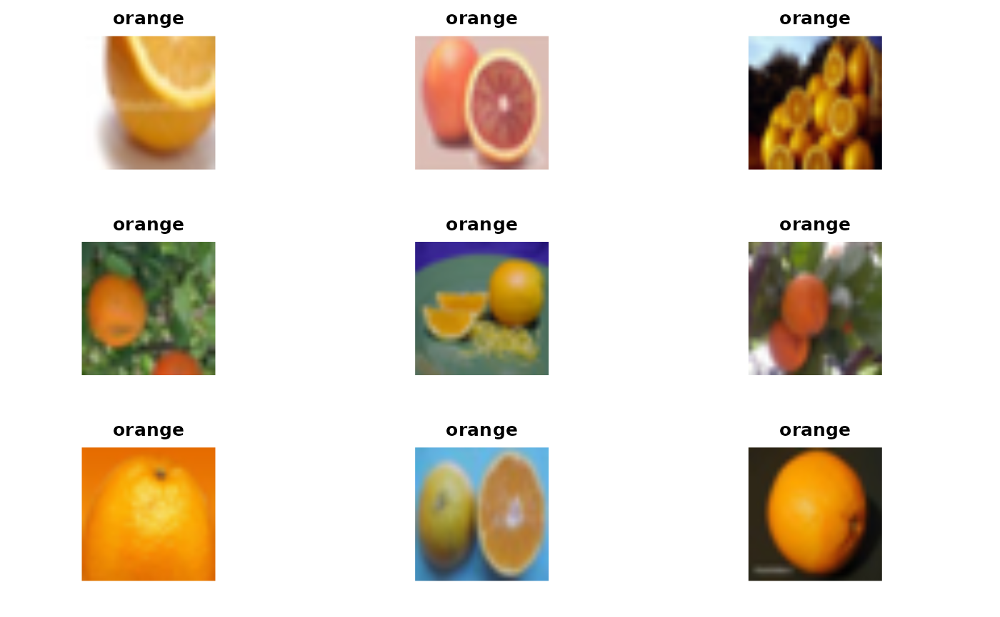

S7 Neural net concepts and applications
Vincent J. Carey, stvjc at channing.harvard.edu
July 11, 2023
Source:vignettes/S7_cnn.Rmd
S7_cnn.RmdIntroductory remarks
- learning a nonlinear regression model and putting it to use
- “layers” of a multilayer neural net and their correspondence to patient characteristics (molecular, clinical) and treatment outcomes
- input, output, loss function
- excellent high level overview comparing convolutional neural nets and autoencoders
Road map
- ImageArray
ISLR (also a python version Convolutional Neural Net example (also see Jeremy Jordan
Sfaira model zoo of embeddings and classifiers
Images and categories
library(littleDeep)
data(ciftrain1k)
ciftrain1k## ImageArray instance with 1000 images, each 32 x 32 x 3
## Image types: possum lion ... caterpillar girl
## Array elements range from 0.000000 to 255.000000.
n <- preview(ciftrain1k)
We can filter an ImageArray
preview(filterByType(ciftrain1k, "orange"))
## NULLQuestion on bias: Does the machine recognize the orange or just the “more orange” color distribution? How do you “normalize” images so that the “object itself” presents only the “essential features”?
A trained classifier that ingests JPGs as arrays and returns scores for resemblance to
pre-trained categories
Check here
I’ll demonstrate ‘jpeg_shrinker’ which could be installed on intel macs but not on M1 macs at this time. This program will convert a jpeg image to 32x32 resolution and use a trained CNN to classify the content.
islr_cnn## function (iarr, nEpochs = 30, batchSize = 128, valSplit = 0.2)
## {
## reticulate::import("keras")
## ca = match.call()
## stopifnot(inherits(iarr, "ImageArray"))
## arr = getArray(iarr)
## d = dim(arr)[-1]
## stopifnot(all(d == c(32, 32, 3)))
## denom = max(arr)
## yclass = getTypes(iarr)
## yclass = as.numeric(factor(yclass))
## yclass = yclass - min(yclass)
## trainxy = list(train = list(x = arr, y = yclass))
## ncat = length(unique(trainxy$train$y))
## model <- keras_model_sequential() %>% layer_conv_2d(filters = 32,
## kernel_size = c(3, 3), padding = "same", activation = "relu",
## input_shape = c(32, 32, 3)) %>% layer_max_pooling_2d(pool_size = c(2,
## 2)) %>% layer_conv_2d(filters = 64, kernel_size = c(3,
## 3), padding = "same", activation = "relu") %>% layer_max_pooling_2d(pool_size = c(2,
## 2)) %>% layer_conv_2d(filters = 128, kernel_size = c(3,
## 3), padding = "same", activation = "relu") %>% layer_max_pooling_2d(pool_size = c(2,
## 2)) %>% layer_conv_2d(filters = 256, kernel_size = c(3,
## 3), padding = "same", activation = "relu") %>% layer_max_pooling_2d(pool_size = c(2,
## 2)) %>% layer_flatten() %>% layer_dropout(rate = 0.5) %>%
## layer_dense(units = 512, activation = "relu") %>% layer_dense(units = ncat,
## activation = "softmax")
## model %>% compile(loss = "categorical_crossentropy", optimizer = optimizer_rmsprop(),
## metrics = c("accuracy"))
## history <- model %>% fit(trainxy$train$x/denom, to_categorical(trainxy$train$y,
## ncat), epochs = nEpochs, batch_size = batchSize, validation_split = valSplit)
## curver = packageVersion("littleDeep")
## ans = list(model = model, history = history, typelevels = typelevels(iarr),
## littleDeepVersion = curver, call = ca, date = Sys.Date())
## class(ans) = c("islr_cnn", "list")
## ans
## }
## <bytecode: 0x55ea20310930>
## <environment: namespace:littleDeep>Sfaira: a model zoo of pretrained embedders and cell-type classifiers from Theis Lab
We’ll look at the pkgdown site, specifically “get started” tab.